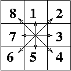

Vuoden 2002 alkukilpailun ensimmäisessä ohjelmointitehtävässä pitää tehdä ohjelma, jonka avulla voidaan laskea ääriviivojen rajaaman alueen pinta-ala.
Ajatellaan, että periaatteessa ääretön alue on jaettu pieniin ruutuihin. Alueen ääriviiva voidaan muodostaa lähtemällä liikkeelle jostakin ruudusta ja kertomalla, miten ääriviiva etenee ruudusta toiseen, kunnes se lopulta palaa takaisin lähtöruutuun.
Jokaisella ruudulla on ruudukossa 8 naapuria. Ääriviiva voi edetä mihin tahansa näistä kahdeksasta naapurista. Tässä tehtävässä ääriviiva ei voi kulkea itsensä yli . Lisäksi jokaiselle ääriviivan ruudulle taataan, että kunkin ruudun ympärillä olevasta kahdeksasta ruudusta tasan kaksi muuta ruutua kuuluu ääriviivaan.
Tehtävänäsi on laskea ääriviivan rajaaman alueen pinta-ala. Ääriviivan ruudut kuuluvat itse alueeseen.
Lähtöpisteestä ääriviiva voi edetä pohjois-etelä suunnassa enintään 200 ruudun etäisyydelle. Vastaavasti itä-länsi suunnassa ääriviiva voi edetä enintään 200 ruudun etäisyydelle.
Ääriviivassa on N ruutua, missä 6 <= N <= 4000.
Ohjelmasi tulee lukea syötteensä oletushakemiston tekstitiedostosta AREA.IN. Tiedoston sisältö on seuraava:

Huomaa, että lähtöpistettä ei mitenkään erityisesti määritellä (voit olettaa sen origoksi). Ääriviivan kiertosuunta voi olla kumpi tahansa.
Ohjelmasi tulosteena tulee olla oletushakemistossa tekstitiedosto AREA.OUT. Tiedostossa tulee olla vain yksi rivi, jolla on yksi kokonaisluku -- ääriviivan rajaaman alueen koko.
Jos tiedostossa AREA.IN on
6 3 4 6 7 8 2
jolloin tulos on AREA.OUT:
8
itse alue näyttää tuolloin seuraavalta:
xx x x xx
Toinen esimerkki, AREA.IN:
14 7 7 6 8 1 2 2 1 2 4 4 4 6 6
jolloin tulos on AREA.OUT:
26
itse alue näyttää tuolloin seuraavalta:
x x x x x x x x x x xxx x
Tehtävän ratkaisuna sinun pitää palauttaa asianmukaisesti kommentoitu lähdekielinen ohjelma. Sallittuja ohjelmointikieliä ovat Pascal, C ja C++. Laita ohjelmasi alkuun kommentiksi yhteystietosi ja mahdolliset ohjeet ohjelman kääntämistä varten. Ohjelmalla pitää olla vain edellä määritellyt syötteet ja tulosteet. Erityisesti sen ei pidä lukea mitään näppäimistöltä tai tulostaa mitään näyttöruudulle.
Arvosteluvaiheessa ohjelmasi käännetään (Unix-ympäristössä) ja suoritetaan useilla erilaisilla testisyötteillä. Pisteitä saa käännetyn ohjelman oikeasta ja nopeasta toiminnasta joukolla testisyötteitä. Lähdekielistä ohjelmaa ei siis arvostella, kunhan vain sen käännös onnistuu. Siirrettävyysongelmien välttämiseksi pitäydy kielen peruspiirteissä.
Testausympäristössä on kääntäjinä käytettävissä ainakin GNU C/C++ ja Pascal sekä Free Pascal (jonka pitäisi olla Turbo Pascal -yhteensopiva). Käännökset tehdään kääntäjien oletusarvoisilla optioilla. Jos käytät ohjelmien tekemiseen Turbo Pascal:a tai C++:aa, kerro se palauttaessasi ohjelmaa. Jos käytettävissä olevista kielen piirteistä tms. on epäselvyyttä, kysy asiasta sähköpostitse. Seuraa myös sivua http://www2.cs.utu.fi/datatahti/DTalku/tiedoituksia.htm, jolle tarpeen mukaan tulee tiedoituksia koskien tehtäviä.
Testisyötteistä osa testaa vain ohjelman oikeellisuutta. Kustakin tällaisesta syötteestä saa tietyn määrän pisteitä, jos ohjelma tuottaa oikean tulosteen kohtuullisessa ajassa. Syötteiden koot ja aikarajat valitaan siten, että hitaallakin ohjelmalla saa pisteitä, kunhan se on muuten toimiva. Osa testisyötteistä testaa ohjelman tehokkuutta. Näillä syötteillä ohjelman saama pistemäärä vähenee sitä mukaa, kun suoritusaika kasvaa. Testisyötteet ovat aina tarkalleen ylläolevan kuvauksen mukaisia. Pisteytyksen yksityiskohtia ja tarkkoja aikarajoja ei tässä vaiheessa julkisteta. Vertailukohdaksi voidaan kuitenkin antaa, että tehtävän laatijan ratkaisu vaatii alle 500 kilotavua muistia ja vie suurimmilla testisyötteillä alle yhden sekunnin suoritusaikaa (GNU C, Linux, 667 MHz Pentium III).
Palauta ratkaisusi mieluiten sähköpostiviestinä osoitteeseen Ville.Leppanen@cs.utu.fi. Älä käytä yli 80 merkin rivejä! Voit myös toimittaa ratkaisusi 3,5 tuuman DOS-formatoidulla levykkeellä osoitteeseen
Pakkaa levyke huolellisesti ja laita mielellään toinen samansisältöinen mukaan varmuuskopioksi. Talleta ohjelmasi juurihakemistoon nimellä dt2002a.pas, dt2002a.c tai dt2002a.cpp.
Alkukilpailun toisessa ohjelmointitehtävässä pitää tehdä ohjelma, jonka avulla selvitetään, miten monta peräkkäistä numeroa voidaan muodostaa annettujen numeroiden summana.
Käytettävissä on N erilaista postimerkkityyppiä, joita kutakin on periaatteessa ääretön määrä. Postimerkkityyppeihin liittyvät arvot ovat keskenään erisuuria. Merkkityyppien joukossa on yksi, jonka arvo on 1. Tehtävänäsi on selvittää, miten monta peräkkäistä kokonaislukuarvoa -- alkaen arvosta 1 -- voit muodostaa valittujen postimerkkien arvojen summana valitsemalla enintään M postimerkkiä kutakin muodostettavaa arvoa varten.
Esimerkiksi, olkoon N=2 ja kyseisiin postimerkkityyppeihin liittyvät arvot 1 ja 4. Jos M=3, niin voidaan muodostaa arvot 1=1, 2=1+1, 3=1+1+1, 4=4, 5=4+1 ja 6=4+1+1, joten tehtävän vastaus tässä tapauksessa olisi 6.
Ohjelmasi tulee lukea syötteensä oletushakemiston tekstitiedostosta STAMPS.IN. Tiedoston sisältö on seuraava:
Ohjelmasi tulosteena tulee olla oletushakemistossa tekstitiedosto STAMPS.OUT. Ohjelmasi tulee kirjoittaa tiedostoon yksi rivi, jossa on yksi kokonaisluku. Kyseinen kokonaisluku on tehtävässä kysytty peräkkäisten kokonaislukuarvojen maksimimäärä, joka voidaan muodostaan käyttämällä enintään M postimerkkiä kutakin arvoa kohti.
Jos tiedostossa STAMPS.IN on
2 3 1 4
on oikea tulostiedoston STAMPS.OUT sisältö:
6
Toinen esimerkki: Jos tiedostossa STAMPS.IN on
4 5 1 12 4 21
on oikea tulostiedoston STAMPS.OUT sisältö:
71
Tehtävän ratkaisuna sinun pitää palauttaa asianmukaisesti kommentoitu lähdekielinen ohjelma. Sallittuja ohjelmointikieliä ovat Pascal, C ja C++. Laita ohjelmasi alkuun kommentiksi yhteystietosi ja mahdolliset ohjeet ohjelman kääntämistä varten. Ohjelmalla pitää olla vain edellä määritellyt syötteet ja tulosteet. Erityisesti sen ei pidä lukea mitään näppäimistöltä tai tulostaa mitään näyttöruudulle.
Arvosteluvaiheessa ohjelmasi käännetään (Unix-ympäristössä) ja suoritetaan useilla erilaisilla testisyötteillä. Pisteitä saa käännetyn ohjelman oikeasta ja nopeasta toiminnasta joukolla testisyötteitä. Lähdekielistä ohjelmaa ei siis arvostella, kunhan vain sen käännös onnistuu. Siirrettävyysongelmien välttämiseksi pitäydy kielen peruspiirteissä.
Testausympäristössä on kääntäjinä käytettävissä ainakin GNU C/C++ ja Pascal sekä Free Pascal (jonka pitäisi olla Turbo Pascal -yhteensopiva). Käännökset tehdään kääntäjien oletusarvoisilla optioilla. Jos käytät ohjelmien tekemiseen Turbo Pascal:a tai C++:aa, kerro se palauttaessasi ohjelmaa. Jos käytettävissä olevista kielen piirteistä tms. on epäselvyyttä, kysy asiasta sähköpostitse. Seuraa myös sivua http://www2.cs.utu.fi/datatahti/DTalku/tiedoituksia.htm, jolle tarpeen mukaan tulee tiedoituksia koskien tehtäviä.
Testisyötteistä osa testaa vain ohjelman oikeellisuutta. Kustakin tällaisesta syötteestä saa tietyn määrän pisteitä, jos ohjelma tuottaa oikean tulosteen kohtuullisessa ajassa. Syötteiden koot ja aikarajat valitaan siten, että hitaallakin ohjelmalla saa pisteitä, kunhan se on muuten toimiva. Osa testisyötteistä testaa ohjelman tehokkuutta. Näillä syötteillä ohjelman saama pistemäärä vähenee sitä mukaa, kun suoritusaika kasvaa. Testisyötteet ovat aina tarkalleen ylläolevan kuvauksen mukaisia. Pisteytyksen yksityiskohtia ja tarkkoja aikarajoja ei tässä vaiheessa julkisteta. Ohjelmallesi tullaan antamaan suoritusaikaa testitapauksesta riippuen 0.1 sekuntia - 10 sekuntia (Linux, 667 MHz Pentium III).
Palauta ratkaisusi mieluiten sähköpostiviestinä osoitteeseen Ville.Leppanen@cs.utu.fi. Älä käytä yli 80 merkin rivejä! Voit myös toimittaa ratkaisusi 3,5 tuuman DOS-formatoidulla levykkeellä osoitteeseen
Pakkaa levyke huolellisesti ja laita mielellään toinen samansisältöinen mukaan varmuuskopioksi. Talleta ohjelmasi juurihakemistoon nimellä dt2002b.pas, dt2002b.c tai dt2002b.cpp.
Kolmannessa tehtävässä tehtävänäsi on auttaa kuljetusliikkeen ajojärjestelijää. Sinun pitää määrittää mahdollisimman hyvä tavaroiden kuljetusjärjestys, jotta kuljettamiseen käytettävä kokonaisaika olisi mahdollisimman pieni.
Kuljetusliikkeellä on N kontillista tavaraa, jotka sen pitää saada toimitettua kohteisiin mahdollisimman nopeasti. Liikkeellä on käytössään M autoa kuormakonttien toimittamiseen. Autot ovat samanlaisia. Kukin auto voi kuljettaa kerrallaan vain yhtä konttia. Kontit pitää toimittaa niiden oikeisiin kohteisiin ja jokaiseen konttiin liittyy kuljetusaika, joka määräytyy suoraan kuljetusliikkeen ja kohteen välisen etäisyyden perusteella. Kuljetusajan ajatellaan muodostuvan siitä ajasta, jonka auto tarvitsee ajaakseen kohteeseen ja takaisin kuljetusliikkeeseen.
Tehtävänäsi on järjestellä konttien kuljetus niin, että kaikki tavarat saadaan kuljetettua kohteisiinsa ja kaikki autot ovat mahdollisimman pian takaisin kuljetusliikkeessä. Erityisesti sinun pitää määrittää, mitkä kontit kukin auto kuljettaa. Huomaa, että ei ole väliä, missä järjestyksessä auto kuljettaa sille määrätyt kontit. Auton ajatellaan kuljettavan sille määrätyt kontit ilman taukoja.
Ohjelmasi tulee lukea syötteensä oletushakemiston tekstitiedostosta LOADS.IN. Tiedoston sisältö on seuraava:
Ohjelmasi tulosteena tulee olla oletushakemistossa tekstitiedosto LOADS.OUT. Ohjelmasi tulee kirjoittaa tiedostoon M+1 riviä, joissa kussakin on yksi tai useampi kokonaisluku, yhdellä välilyönnillä toisistaan eroitettuina. Ensimmäisellä rivillä on yksi kokonaisluku, joka kertoo kuljetukseen kuluvan kokonaisajan. Seuraavat M riviä kuvaavat kunkin auton kuljetettavaksi määrätyt kontit. Tiedoston toinen rivi kuvaa ensimmäisen auto kuljettamat kontit, kolmas rivi toisen auton kuljettamat kontit, jne. Kunkin auton kohdalla rivin ensimmäinen luku ilmoittaa, montako konttia kyseinen auto kuljettaa. (Tämä luku on siis kokonaisluku väliltä 0, ... N.) Seuraavaksi rivillä luetellaan ne kontit, jotka kyseinen auto kuljettaa.
Esimerkiksi tiedoston sisältö voisi olla
11 3 1 7 6 2 2 5 2 3 4mikä tarkoittaa, että kuljettamiseen kuluva kokonaisaika on 11. Ensimmäinen auto kuljettaa kolme konttia: kontit 1, 7 ja 6. Toinen auto kuljettaa kaksi konttia: kontit 2 ja 5. Kolmas auto kuljettaa myös kaksi konttia: kontit 3 ja 4. (Kokonaisaika 11 toteutuu, jos konttien 1 - 7 kuljetusajat ovat 5, 5, 4, 4, 3, 3 ja 3.)
Huomaa, että kunkin kontin numeron täytyy esiintyä tasan kerran tiedostossa. Kullekin autolle kuljetettavaksi määrättyjen konttien järjestyksellä ei ole väliä.
Huomaa, että ongelmalla on useita optimaalisia ratkaisuja. Ohjelmasi ei edes tarvitse löytää optimaalista ratkaisua saadakseen pisteitä. Pisteitä annetaan ratkaisun hyvyyden perusteella.
Jos tiedostossa LOADS.IN on
7 3 5 5 4 4 3 3 3
on optimaalisen ratkaisun määrittelevän tulostiedoston LOADS.OUT sisältö esimerkiksi:
9 2 1 3 2 2 4 3 5 6 7
Tehtävän ratkaisuna sinun pitää palauttaa asianmukaisesti kommentoitu lähdekielinen ohjelma. Sallittuja ohjelmointikieliä ovat Pascal, C ja C++. Laita ohjelmasi alkuun kommentiksi yhteystietosi ja mahdolliset ohjeet ohjelman kääntämistä varten. Ohjelmalla pitää olla vain edellä määritellyt syötteet ja tulosteet. Erityisesti sen ei pidä lukea mitään näppäimistöltä tai tulostaa mitään näyttöruudulle.
Arvosteluvaiheessa ohjelmasi käännetään (Unix-ympäristössä) ja suoritetaan useilla erilaisilla testisyötteillä. Pisteitä saa käännetyn ohjelman oikeasta ja nopeasta toiminnasta joukolla testisyötteitä. Lähdekielistä ohjelmaa ei siis arvostella, kunhan vain sen käännös onnistuu. Siirrettävyysongelmien välttämiseksi pitäydy kielen peruspiirteissä.
Testausympäristössä on kääntäjinä käytettävissä ainakin GNU C/C++ ja Pascal sekä Free Pascal (jonka pitäisi olla Turbo Pascal -yhteensopiva). Käännökset tehdään kääntäjien oletusarvoisilla optioilla. Jos käytät ohjelmien tekemiseen Turbo Pascal:a tai C++:aa, kerro se palauttaessasi ohjelmaa. Jos käytettävissä olevista kielen piirteistä tms. on epäselvyyttä, kysy asiasta sähköpostitse. Seuraa myös sivua http://www2.cs.utu.fi/datatahti/DTalku/tiedoituksia.htm, jolle tarpeen mukaan tulee tiedoituksia koskien tehtäviä.
Testisyötteistä osa testaa vain ohjelman oikeellisuutta. Kustakin tällaisesta syötteestä saa tietyn määrän pisteitä, jos ohjelma tuottaa oikean tulosteen annetussa ajassa. Syötteiden koot valitaan siten, että hitaallakin ratkaisumenetelmällä saa pisteitä, kunhan se on muuten toimiva. Osa testisyötteistä testaa ohjelman tehokkuutta. Näillä syötteillä ohjelman saama pistemäärä vähenee sitä mukaa, kun suoritusaika kasvaa. Testisyötteet ovat aina tarkalleen ylläolevan kuvauksen mukaisia. Pisteytyksen yksityiskohtia ei tässä vaiheessa julkisteta, mutta ohjelmasi saa pisteitä sen mukaan, mitä paremman ratkaisun se löytää. Ohjelmallesi tullaan antamaan suoritusaikaa 5 sekuntia testitapausta kohti (Linux, 667 MHz Pentium III).
Palauta ratkaisusi mieluiten sähköpostiviestinä osoitteeseen Ville.Leppanen@cs.utu.fi. älä käytä yli 80 merkin rivejä! Voit myös toimittaa ratkaisusi 3,5 tuuman DOS-formatoidulla levykkeellä osoitteeseen
Pakkaa levyke huolellisesti ja laita mielellään toinen samansisältöinen mukaan varmuuskopioksi. Talleta ohjelmasi juurihakemistoon nimellä dt2002c.pas, dt2002c.c tai dt2002c.cpp.